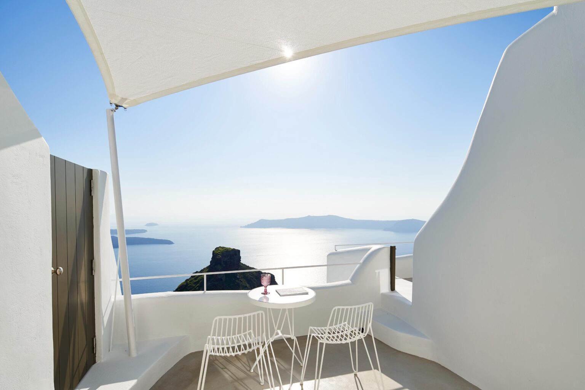

The essence of Heavens Edge
Welcome to Heavens Edge, an exquisite retreat nestled on the mesmerizing caldera cliffs of Imerovigli in Santorini.
Perched at the edge of the world-renowned volcanic crater, it offers a captivating blend of luxury, tranquility and breathtaking views of -some say- the most beautiful sunset in the world.

Heavens Edge boasts a collection of thoughtfully designed suites and indulgent villas, each meticulously crafted to provide the ultimate Santorinian experience. From the moment you arrive, you'll be enveloped in an atmosphere of serenity and sophistication. As you unravel the essence of our boutique gem, our tailor-made services will create the perfect scenery for this trip of a lifetime.
See All Suites & Villas
The elegant Deluxe and Superior suites, as well as the Two-Bedroom villa, offer a sanctuary of peace and style. Experience the convenience of the fine-quality mattresses, providing a restful night's sleep like no other, as well as having an equipped kitchenette at your disposal, allowing you to effortlessly prepare meals for you and your loved ones. Step outside onto your private terrace to discover the rejuvenating outdoor hot tub, where you can unwind as you soak in the panoramic vistas of the caldera and the azure Aegean Sea.
But perhaps it is the signature villa that truly sets Heaven's Edge apart, a harmonious blend of indoor and outdoor living. Gaze upon the magnificent caldera views from its private terrace, or step inside to discover the pièce de résistance: an inviting indoor plunge pool nestled within a cave, where you can unwind in style and rejuvenate in peace.
See All Suites & Villas
All suites and villas at Heaven's Edge are equipped with every modern convenience, including mini kitchenettes, spacious bathrooms with walk-in showers, plush bathrobes & slippers, along with smart TVs with streaming services. Their hidden gems are their wine cooler cabinets containing an unparalleled selection of wines, ensuring a seamless and comfortable stay.
See All Suites & Villas